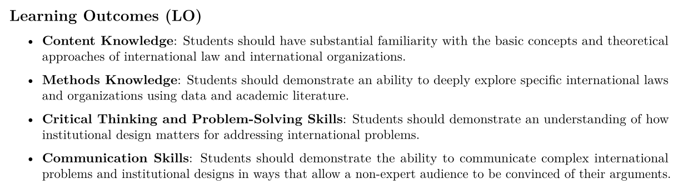
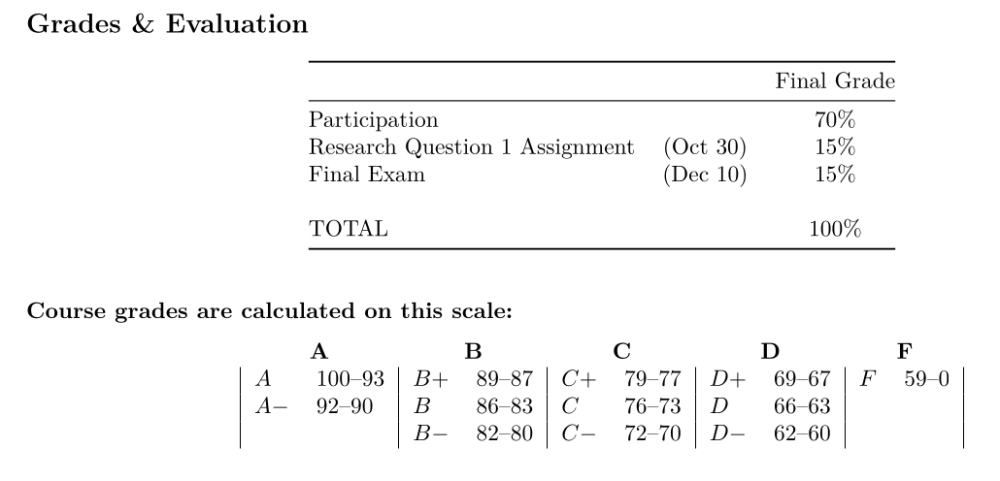
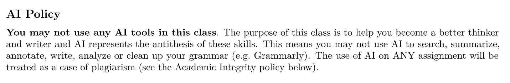
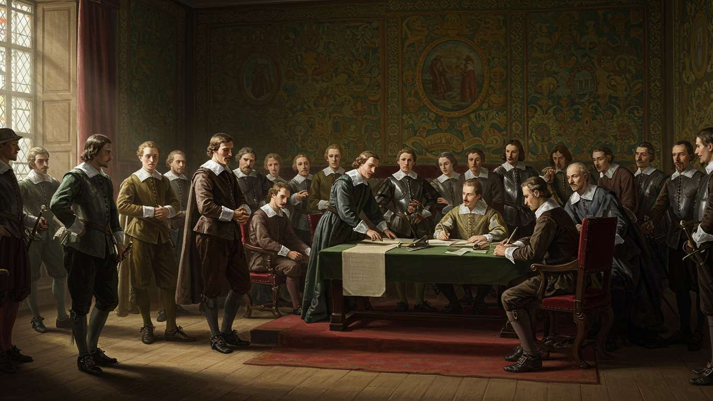
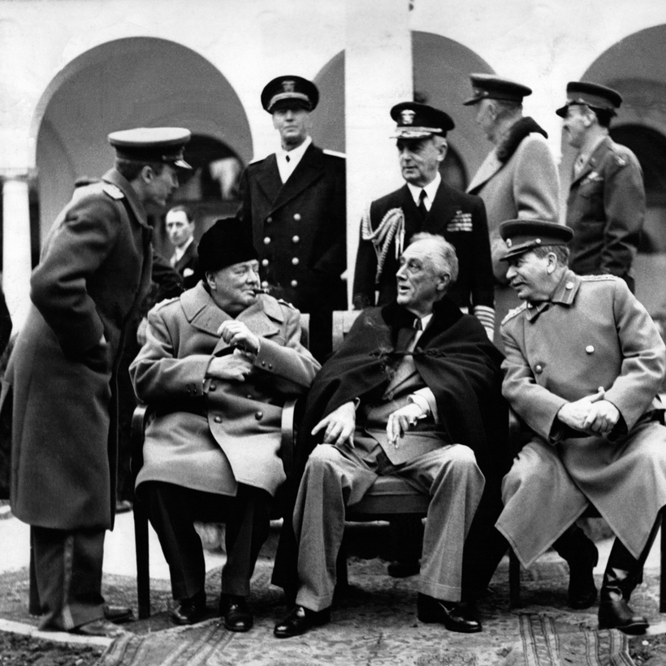
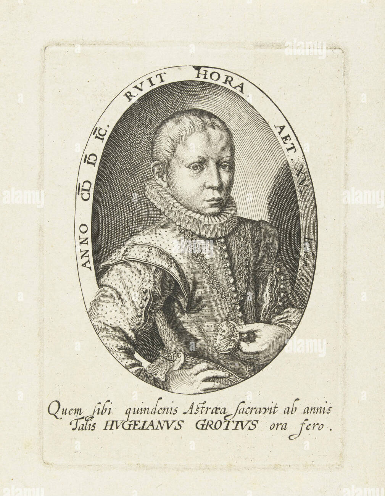
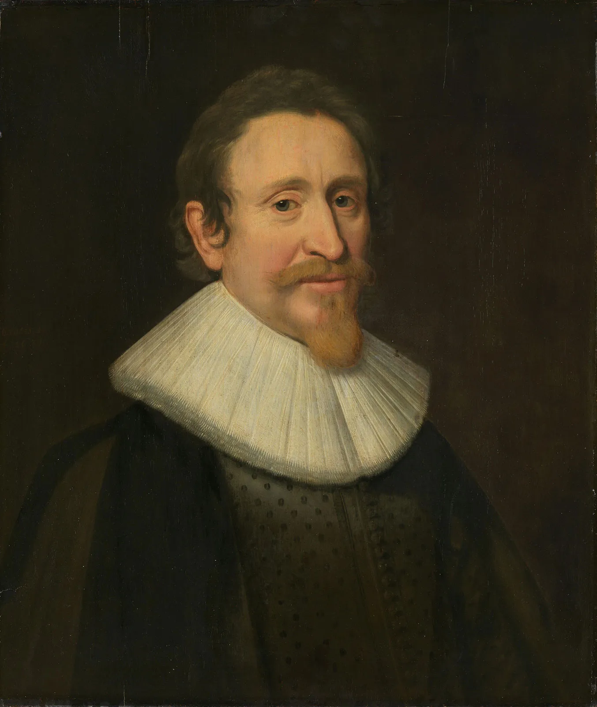
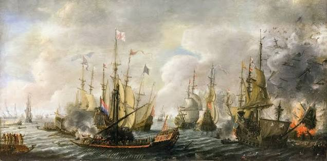
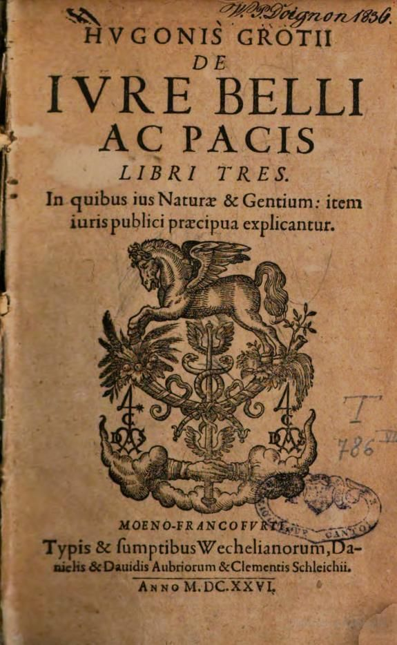

Today’s Agenda
Section 1: Analyzing International Institutions
Examining Your Prior Assumptions About International Law
- Hugo Grotius, the Old World Order and your prior assumptions
Justin Leinaweaver (Fall 2026)
The Answers are in the Syllabus




Last Class
What does it mean to study “international politics”?
What is ‘politics’?
What is ‘international’?
Last Class
Why is it so hard to produce international laws that bind all actors in the global system?




Hugo Grotius (1583-1645)


The Dutch Capture of the Santa Catarina (1603)

Hugo Grotius and the Old World Order
ALL human beings possess the same rights
War is a defensible action (“moral”) if used to defend your rights
In “formal wars” the principle is “Might is Right”
In “private wars” the cause must be “just” and outside state jursidiction

Under what specific conditions do you believe it should be “legal” or “allowable” to start a war?
For Each Case
Who was the attacker?
Who was the attacked?
On what date did this become a war?
Under what specific conditions do you believe it should be “legal” or “allowable” to start a war?
- Reflect on our cases and discussions then make a list of your key criteria
For Next Class
Sources of International Law
Cassese (2005) ch8 on “Customary Law”
Tannenwald (2005) excerpts on the “nuclear taboo”
Canvas: Evaluate the nuclear taboo